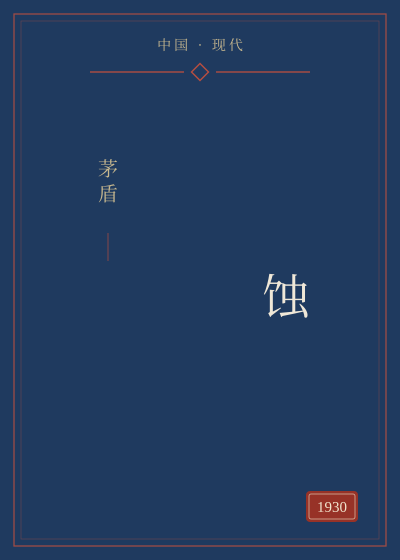
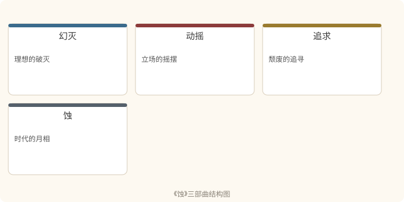

蚀
一、基本信息
| 作者 | 茅盾 |
|---|---|
| 成书/出版 | 1930年（作者页 B078 口径：蚀（幻灭·动摇·追求）1930） Mao Dun — Encyclopaedia Britannica（百科全书） |
| 国别/地区 | 中国 |
| 时代 | 现当代 · 现代 |
| 体裁 | 三部曲中篇 |
| 语言 | 汉语（白话） |

《蚀》三部曲结构图（主题·结构图）
二、创作背景
作者页（B078）：茅盾 major_works 载'蚀（幻灭·动摇·追求）1930'（B078 作者页定位，详见 ziye 条核对）。
题材（通说）：大革命前后知识青年的幻灭、动摇、追求——茅盾处女作三部曲。
三、内容脉络
《幻灭》：静女士的革命幻想破灭（通说待核）。
《动摇》：方罗兰的动摇与胡国光的投机（通说待核）。
《追求》：章秋柳们的颓废追求（通说待核）。
四、主要人物表
| 人物 | 身份 | 说明 |
|---|---|---|
| 静女士 | 女学生 | 幻灭（通说待核） |
| 章秋柳 | 时代女性 | 追求（通说待核） |
五、主题与艺术特点
- 大革命失败后的精神'蚀'（通说）。
- 时代女性的三部曲（通说）。
- 现实主义与心理描写（通说）。
六、影响与评论
- 作者页：茅盾处女作三部曲（B078 作者页口径）。
Mao Dun — Encyclopaedia Britannica（百科全书） - 《子夜》之前的茅盾（B078 作者页谱系）。
Mao Dun — Encyclopaedia Britannica（百科全书）
七、阅读建议
难点
- 大革命史背景。
- 三部曲的连续性。
- 《蚀》（人民文学出版社《茅盾全集》，通说待核）。
先《蚀》后《子夜》看茅盾的演进。
八、待核实
- 三部各自首刊（《小说月报》说）核对。
- 静女士/章秋柳人名核对。
- '蚀'题解（作者自序）待核。
本页主要来源
茅盾的其他收录作品：子夜